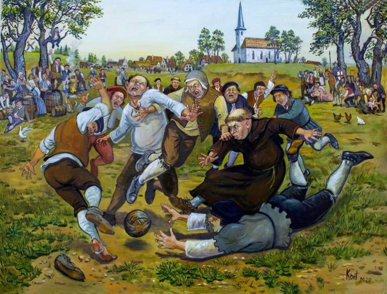
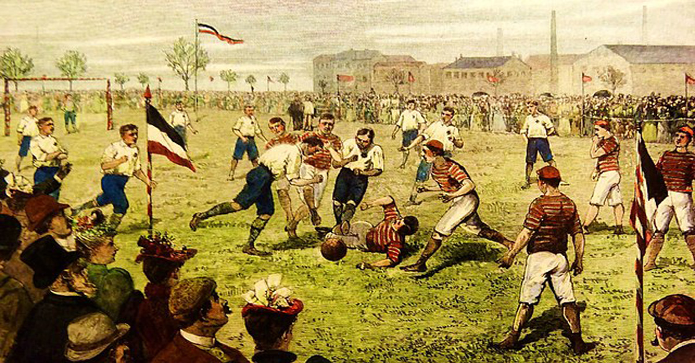

Histoire de Football (Soccer)

Le soccer, ou football, trouve ses origines dans l'Antiquité, où des jeux impliquant des
ballons étaient pratiqués en Chine, en Grèce et à Rome. Cependant, la version moderne du sport a émergé en
Angleterre au XIXe siècle. En 1863, la Football Association (FA) a été fondée, établissant des règles
standard pour différencier le soccer du rugby. Ce cadre réglementaire a favorisé la popularisation du sport,
qui s'est rapidement répandu dans le monde grâce à la colonisation britannique et les échanges culturels.
Aujourd'hui, le soccer est le sport le plus pratiqué et suivi au monde, incarnant un phénomène culturel
universel.

Le soccer se joue entre deux équipes de 11 joueurs sur un terrain rectangulaire avec un
but à chaque extrémité. L'objectif est de marquer en envoyant le ballon dans le but adverse, tout en
défendant le sien. Seuls les gardiens peuvent utiliser leurs mains, et seulement dans leur surface de
réparation; les autres joueurs utilisent leurs pieds, tête ou corps. Un match dure 90 minutes, divisées en
deux mi-temps de 45 minutes, avec une pause de 15 minutes. Les règles incluent le hors-jeu, les fautes, les
coups francs, les corners et les penalties, assurant un jeu équitable et structuré.